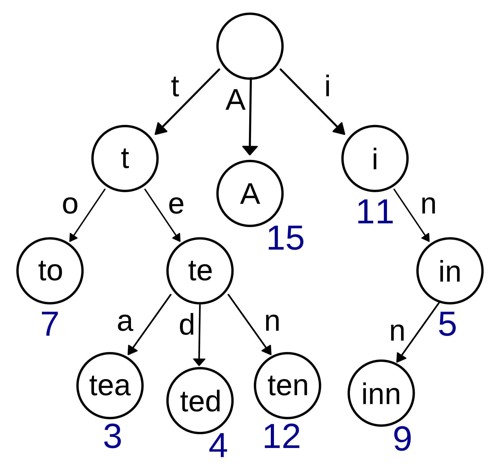

Radix Tree Index

1. B+Tree optimizations.
2. Additional Index Usage.
3. Trie Index
4. Radix Tree Index
3. Inverted Index.
1. Prefix Compression
2. Suffix Truncation
3. Bulk inserts.
4. Pointer swizzling.
Отсортированные ключи в одном leaf узле, скорее всего, будут иметь одинаковый префикс.
Вместо того, чтобы хранить весь ключ, можно извлечь общий префикс ключей и сохранить только уникальный суффикс для каждого ключа.
Может быть множество вариации.
Ключи в inner узлах используются только для поиска пути к leaf листу.
Нам не нужно хранить весь ключ.
Можно хранить минимальный префикс, необходимый для поиска пути к leaf листу.
Самый быстрый/лучший способ построить B+Tree — сначала отсортировать ключи, а затем построить индекс снизу вверх.
Узлы используют идентификаторы страниц для ссылки на другие узлы в индексе. СУБД должна получить адрес памяти из таблицы страниц во время обхода.
Если страница закреплена в буферном пуле, мы можем хранить указатели вместо идентификаторов страниц. Это позволяет избежать обращений к буферному пулу.
1. Неявные индексы (Implicit Indexes).
2. Частичные индексы (Partial Indexes).
3. Покрывающие индесы (Covering Indexes).
4. Включение дополнительных атрибутов в индекс (Index Include Columns).
5. Функциональные индексы (Function/Expression Indexes).
Большинство СУБД автоматически создают индекс для обеспечения целостности, но не для внешних ключей.
1. PRIMARY KEY
2. UNIQUE CONSTRAINT
Создайте индекс для подмножества данных из таблицы. Это потенциально уменьшает размер индекса и количество накладных расходов на его обслуживание.
Одним из распространенных вариантов использования является создания отдельных индексов по диапазонам дат.
Создать отдельный индекс на месяц, год.
CREATE INDEX idx_test_table ON test_table (value)
WHERE id > 25;
Если все поля, необходимые для обработки запроса, доступны в индексе, то СУБД не нужно извлекать кортеж.
Это уменьшает нагрузку на буфер пулов СУБД.
CREATE INDEX idx_test_table ON test_table (id, value)
SELECT value FROM test_table WHERE id > 5
Индекс хранит дополнительные столбцы для поддержки index-only запросов.
Эти дополнительные столбцы хранятся только в листовых узлах и не являются частью ключа поиска.
CREATE INDEX idx_test_table ON test_table (id, value)
INCLUDE (value2)
SELECT value2 FROM test_table
WHERE id > 5 AND value > 20
Использует результат функции или выражения в качестве ключа.
Задача СУБД — распознать, какие запросы могут использовать этот индекс.
CREATE INDEX idx_test_table ON test_table (LENGTH(value))
SELECT id FROM test_table WHERE LENGTH(value) > 5
По ключам внутренних узлов в B+Tree нельзя сказать, существует ли ключ в индексе. Всегда необходимо обойти дерево к листовому узлу.
Это означает, необходимо прочитать одну страницу буферного пула на каждом уровне дерева только для того, чтобы узнать, что ключа не существует.
Можно использовать цифровое представление ключей для проверки префиксов один за другим вместо сравнения всего ключа.
Все операции имеют сложность O(k), где k — длина ключа.
Путь к листовому узлу представляет собой ключ.
Ключи хранятся неявно и могут быть восстановлены из пути.
Radix Tree — это вариант структуры данных Trie. Он использует цифровое представление ключей для проверки префиксов один за другим вместо сравнения всего ключа. Это отличается от Trie тем, что для каждого элемента в ключе нет узла, узлы объединяются для представления самого большого префикса до того, как ключи элементов различаются.
Высота дерева зависит от длины ключей, а не от их количества. Путь к листовым узлам представляет собой ключ листа.
Не все типы атрибутов могут быть разложены в двоичное представление.
Инвертированный индекс хранит сопоставление слов из записи, содержащей эти слова в целевой атрибут.
Иногда называется индексом полнотекстового поиска.
Большинство СУБД поддерживают по умолчанию. Существуют также специализированные СУБД для полнотекстового поиска Lucene, Elastic Search.
1. Поиск по фразе (Phrase Searches)
Найти записи, содержащие список слов в заданном порядке.
2. Поиски близких слов (Proximity Searches)
Найти записи, в которых два слова встречаются в пределах n слов друг от друга.
3. Поиск с подстановочными знаками (Wildcard Searches)
Найдите записи, содержащие слова, соответствующие некоторому шаблону (например, регулярному выражению).
Индекс должен хранить как минимум слова, содержащиеся в каждой записи (разделенные знаками препинания).
Может также хранить частоту, положение и другие метаданные.
Использует вспомогательные структуры данных для поддержки batch обновлений.
Индексы одна из важнейших составляющих скорости запросов в СУБД.
B+Tree индексы хорошее решение по умолчанию.